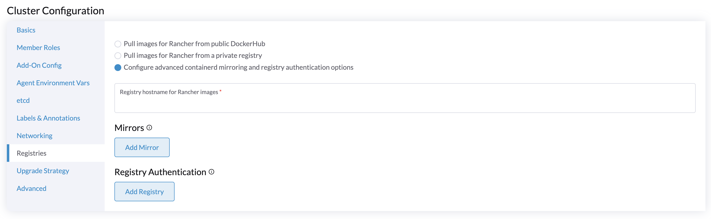
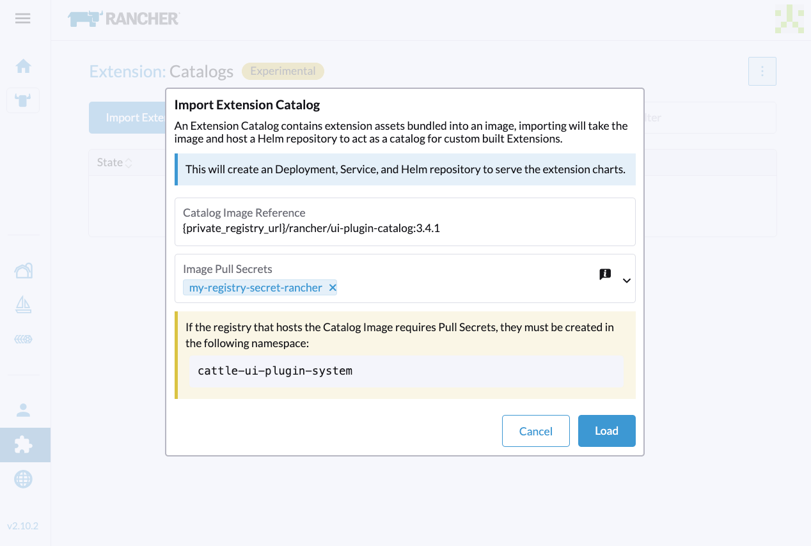
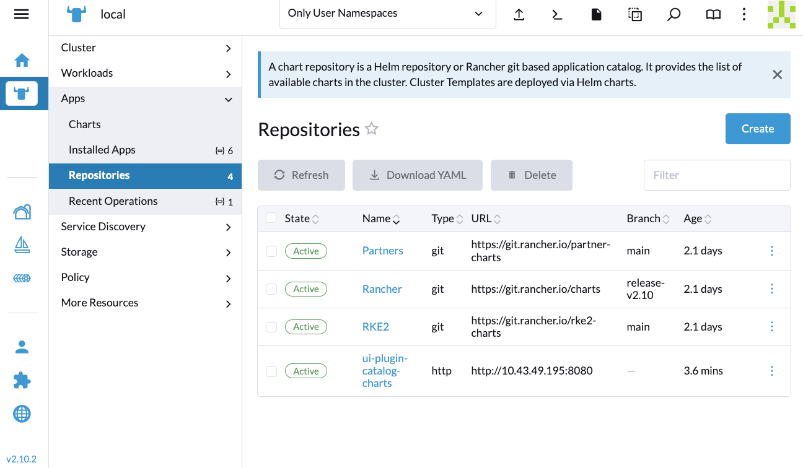

|
Este documento ha sido traducido utilizando tecnología de traducción automática. Si bien nos esforzamos por proporcionar traducciones precisas, no ofrecemos garantías sobre la integridad, precisión o confiabilidad del contenido traducido. En caso de discrepancia, la versión original en inglés prevalecerá y constituirá el texto autorizado. |
Entorno aislado
Esta sección describe cómo utilizar SUSE Virtualization en un entorno aislado. Algunos casos de uso podrían ser donde SUSE Virtualization se instalará sin conexión, detrás de un firewall o detrás de un proxy.
La imagen ISO contiene todos los paquetes necesarios para que funcione en un entorno aislado.
Trabajando Detrás de un Proxy HTTP
En algunos entornos, la conexión a servicios externos, desde los servidores o máquinas virtuales, requiere un proxy HTTP(S).
Configurar un Proxy HTTP Durante la Instalación
Puedes configurar el proxy HTTP(S) durante la instalación de la ISO como se muestra en la imagen a continuación:

Configurar un Proxy HTTP
Puedes configurar el proxy HTTP(S) utilizando la interfaz de usuario.
-
Ve a la página de configuración de la interfaz de usuario.
-
Encuentra la configuración de
http-proxy, haz clic en ⋮ > Editar configuración -
Introduce el/los valor(es) para
http-proxy,https-proxyyno-proxy.

|
SUSE Virtualization añade las direcciones necesarias a Cuando los nodos en el clúster no utilizan un proxy para comunicarse entre sí, el CIDR necesita ser añadido a |
Imágenes del Clúster de Invitados
Todas las imágenes necesarias para instalar y ejecutar SUSE Virtualization están convenientemente empaquetadas en la ISO, eliminando la necesidad de precargar imágenes en nodos sin sistema operativo. Un SUSE Virtualization clúster los gestiona de forma independiente y eficaz en segundo plano.
Sin embargo, es esencial entender que un clúster Kubernetes invitado (por ejemplo, un SUSE® Rancher Prime: RKE2 clúster) creado por el Controlador de Nodo Harvester es una entidad distinta de un clúster SUSE Virtualization. Un clúster invitado opera dentro de máquinas virtuales y requiere obtener imágenes ya sea de internet o de un registro privado.
Si la opción Proveedor de Nube está configurada para SUSE Virtualization en un clúster Kubernetes invitado, despliega el Proveedor de Nube Harvester y el controlador de Interfaz de Almacenamiento de Contenedores (CSI).

Como resultado, recomendamos monitorizar cada versión de RKE2 en su entorno aislado y obtener las imágenes necesarias en su registro privado. Por favor, consulte la Matriz de Soporte para el mejor soporte de capacidades del Proveedor de Nube Harvester y del controlador CSI.
Integrar con un Externo Rancher
Rancher determina la imagen rancher-agent que se utilizará cada vez que se importe un clúster SUSE Virtualization. Si la imagen no está incluida en el SUSE Virtualization ISO, debe obtenerse de internet y cargarse en cada nodo, o enviarse al registro del clúster SUSE Virtualization.
# Run the following commands on a computer that can access both the internet and the {harvester-product-name} cluster.
docker pull rancher/rancher-agent:<version>
docker save rancher/rancher-agent:<version> -o rancher-agent-<version>.tar
# Copy the image TAR file to the air-gapped environment.
scp rancher-agent-<version>.tar rancher@<harvester-node-ip>:/tmp
# Use SSH to connect to the {harvester-product-name} node, and then load the image.
ssh rancher@<harvester-node-ip>
sudo -i
docker load -i /tmp/rancher-agent-<version>.tarExtensión de la interfaz de usuario de Harvester con integración de Rancher
La extensión de la interfaz de usuario de Harvester es necesaria para acceder a la interfaz de usuario de SUSE Virtualization en Rancher v2.10.x y versiones posteriores. Sin embargo, instalar la extensión a través de la red no es posible en un entorno aislado, por lo que debe realizar el siguiente procedimiento alternativo:
-
Extraiga la imagen rancher/ui-plugin-catalog con la etiqueta más reciente.
-
En la interfaz de usuario de Rancher, vaya a Extensiones, y luego seleccione ⋮ → Gestionar catálogos de extensiones.

-
Especifique la información requerida.

-
Referencia de imagen del catálogo: Especifique la URL del registro privado y el repositorio de imágenes.
-
Secretos de extracción de imágenes: Especifique el secreto utilizado para acceder al registro cuando se requieren un nombre de usuario y una contraseña. Debe crear ese secreto en el espacio de nombres
cattle-ui-plugin-system. Utilicekubernetes.io/dockercfgokubernetes.io/dockerconfigjsoncomo el valor detype.Ejemplo:
apiVersion: v1 kind: Secret metadata: name: my-registry-secret-rancher namespace: cattle-ui-plugin-system type: kubernetes.io/dockerconfigjson data: .dockerconfigjson: {base64 encoded data}
-
-
Haga clic en Cargar, y luego permita un tiempo para que la extensión se cargue.

-
En la pestaña Disponibles, localice la extensión llamada Harvester, y luego haga clic en Instalar.

-
Seleccione la versión que coincida con el clúster SUSE Virtualization, y luego haga clic en Instalar.
Para más información, consulte la matriz de soporte de extensiones de Harvester UI.


-
Ve a Gestión de virtualización → Clústeres de Harvester.
Ahora puede importar clústeres SUSE Virtualization y acceder a la interfaz de usuario SUSE Virtualization.

Requisitos de tiempo
Un servidor de protocolo de tiempo de red (NTP) fiable es crítico para mantener la hora del sistema correcta en todos los nodos de un clúster de Kubernetes, especialmente al ejecutar SUSE Virtualization. Kubernetes depende de etcd, un almacén de clave-valor distribuido, que requiere una sincronización precisa para asegurar la consistencia de los datos y prevenir problemas con la elección de líderes, la replicación de registros y la estabilidad del clúster.
En un entorno aislado, donde las fuentes de tiempo externas no están disponibles, mantener un tiempo preciso y sincronizado se vuelve aún más crucial. Sin una sincronización adecuada, los nodos del clúster pueden experimentar fallos de autenticación, problemas de programación o incluso corrupción de datos. Para mitigar estos riesgos, las organizaciones deben desplegar un servidor NTP interno robusto que realice la sincronización en todos los sistemas dentro de la red.
Asegurar una hora precisa y consistente en el clúster es esencial para la fiabilidad, la seguridad y la integridad general del sistema.
Solución de problemas
Las extensiones de la interfaz de usuario no aparecen
Si la pantalla de Extensiones está vacía, ve a Repositorios (⋮ → Gestionar Repositorios) y luego haz clic en Actualizar.



Error de Instalación
Si encuentras un error durante la instalación, revisa el recurso uiplugins.

Ejemplo:
bash-4.4# k get uiplugins -A
NAMESPACE NAME PLUGIN NAME VERSION STATE
cattle-ui-plugin-system harvester harvester 1.0.3 pending
bash-4.4# k get uiplugins harvester --namespace cattle-ui-plugin-system -o yaml
apiVersion: catalog.cattle.io/v1
kind: UIPlugin
metadata:
# skip
name: harvester
namespace: cattle-ui-plugin-system
spec:
plugin:
endpoint: http://ui-plugin-catalog-svc.cattle-ui-plugin-system:8080/plugin/harvester-1.0.3Asegúrate de que svc.namespace sea accesible desde Rancher. Si ese punto final no es accesible, puedes usar directamente una IP de clúster como 10.43.33.58:8080/plugin/harvester-1.0.3.